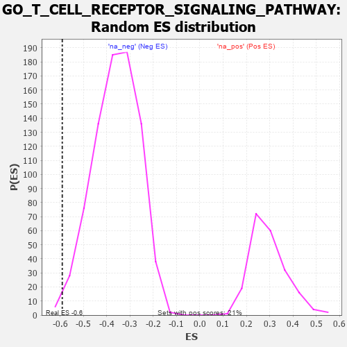

| | | Dataset | 7d |
| Phenotype | NoPhenotypeAvailable |
| Upregulated in class | na_neg |
| GeneSet | GO_T_CELL_RECEPTOR_SIGNALING_PATHWAY |
| Enrichment Score (ES) | -0.5904363 |
| Normalized Enrichment Score (NES) | -1.6402096 |
| Nominal p-value | 0.007556675 |
| FDR q-value | 0.0661426 |
| FWER p-Value | 1.0 |
Table: GSEA Results Summary
 Fig 1: Enrichment plot: GO_T_CELL_RECEPTOR_SIGNALING_PATHWAY
Fig 1: Enrichment plot: GO_T_CELL_RECEPTOR_SIGNALING_PATHWAY
Profile of the Running ES Score & Positions of GeneSet Members on the Rank Ordered List
| PROBE | GENE SYMBOL | GENE_TITLE | RANK IN GENE LIST | RANK METRIC SCORE | RUNNING ES | CORE ENRICHMENT | | 1 | PSMD7 | | | 1152 | 0.454 | -0.1273 | No |
| 2 | PSMD2 | | | 1181 | 0.450 | -0.1132 | No |
| 3 | PSMD4 | | | 1811 | 0.335 | -0.1793 | No |
| 4 | PSMD6 | | | 1858 | 0.326 | -0.1723 | No |
| 5 | PAK3 | | | 1889 | 0.322 | -0.1635 | No |
| 6 | PSME4 | | | 2143 | 0.285 | -0.1842 | No |
| 7 | PSMF1 | | | 2251 | 0.268 | -0.1871 | No |
| 8 | PSMD5 | | | 2560 | 0.218 | -0.2174 | No |
| 9 | CUL1 | | | 2735 | 0.193 | -0.2317 | No |
| 10 | PSMD9 | | | 3179 | 0.125 | -0.2826 | No |
| 11 | SKP1 | | | 3663 | 0.049 | -0.3416 | No |
| 12 | DGKZ | | | 3879 | 0.015 | -0.3681 | No |
| 13 | PDE4B | | | 4089 | -0.022 | -0.3935 | No |
| 14 | ABL1 | | | 4125 | -0.027 | -0.3969 | No |
| 15 | PSME3 | | | 4280 | -0.056 | -0.4141 | No |
| 16 | GATA3 | | | 4614 | -0.120 | -0.4513 | No |
| 17 | PLCG1 | | | 4770 | -0.151 | -0.4649 | No |
| 18 | PDPK1 | | | 5043 | -0.207 | -0.4911 | No |
| 19 | WNK1 | | | 5650 | -0.362 | -0.5532 | No |
| 20 | PSMD1 | | | 5674 | -0.367 | -0.5417 | No |
| 21 | ADA | | | 5798 | -0.405 | -0.5413 | No |
| 22 | STK11 | | | 5922 | -0.443 | -0.5394 | No |
| 23 | ELF1 | | | 6328 | -0.587 | -0.5674 | Yes |
| 24 | UBE2N | | | 6407 | -0.621 | -0.5529 | Yes |
| 25 | CSK | | | 6428 | -0.630 | -0.5307 | Yes |
| 26 | MALT1 | | | 6432 | -0.634 | -0.5062 | Yes |
| 27 | PAK1 | | | 6691 | -0.757 | -0.5090 | Yes |
| 28 | PTPRJ | | | 7180 | -1.054 | -0.5291 | Yes |
| 29 | CYLD | | | 7333 | -1.206 | -0.5009 | Yes |
| 30 | RNF31 | | | 7744 | -1.895 | -0.4782 | Yes |
| 31 | PDE4D | | | 7764 | -1.944 | -0.4043 | Yes |
| 32 | TRAF6 | | | 7818 | -2.157 | -0.3263 | Yes |
| 33 | FYN | | | 7881 | -2.622 | -0.2312 | Yes |
| 34 | PSMD3 | | | 7907 | -2.887 | -0.1210 | Yes |
| 35 | PSMD8 | | | 7931 | -3.286 | 0.0050 | Yes |
Table: GSEA details [plain text format]

Fig 2: GO_T_CELL_RECEPTOR_SIGNALING_PATHWAY: Random ES distribution
Gene set null distribution of ES for GO_T_CELL_RECEPTOR_SIGNALING_PATHWAY